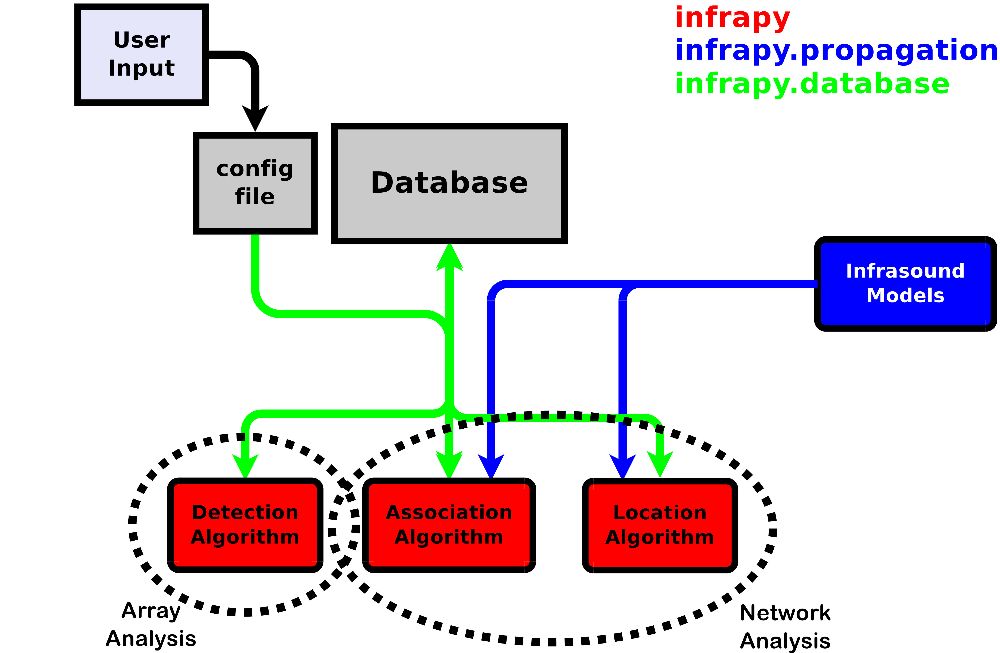

Welcome to Infrapy’s documentation. Get started with Installation and then get an overview with the Quickstart. There is also a more detailed Tutorial that demonstrates the various processing capabilities of infrapy. The rest of the docs describe each component in detail, with a full reference in the API section.
This document is a work in progress and may be updated as development of Infrapy continues.
This part of the documentation, which is mostly prose, begins with some background information about Infrapy, then focuses on step-by-step instructions for data processing using Infrapy.
Overview¶
Infrapy is a tool for processing infrasound and seismic array data. Infrapy implements a database-centric approach for pipeline continuous near real-time analysis. The pipeline includes analysis at station and network levels (using beam-forming and clustering techniques, respectively) for the detection, association and location of events. The pipeline relies on the interaction of the algorithms with a relational database structure to organize and store waveform data, the parameters for the analysis, and results of both levels of analysis. Our implementation can interact seamlessly with traditional (e.g.: Oracle) and serverless (e.g.: SQLite) relational databases.